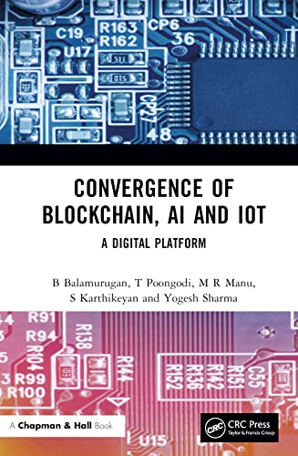

Assistant Professor & Researcher in Computer Science and Engineering
Department of Computer Science & Engineering · Jain University, Bangalore
Doctoral Researcher specializing in DNA Cryptography, Lightweight IoT Security, and Deep Learning for Healthcare. Published author with CRC Press (Taylor & Francis) and inventor of a published intellectual property patent. Bridging theoretical cryptographic algorithms with practical applied intelligence and nurturing the next generation of engineers.
I am an Assistant Professor in the Department of Computer Science and Engineering at Jain University, Bangalore. Having submitted my doctoral dissertation at Galgotias University, my academic journey centers around the intersection of bio-inspired cryptographic protocols, secure edge networking, and machine intelligence.
Over the past decade, I have served across premier engineering institutions in South and North India, including Galgotias University (Greater Noida), Knowledge Institute of Technology (KIOT, Salem), and SNS College of Technology (Coimbatore). Throughout this tenure, I have held pivotal academic administrative responsibilities as IQAC Coordinator, Project Coordinator, Moodle Administrator, and Training & Placement Lead.
My core research investigates DNA Cryptography—harnessing biological nucleotide structures for high-entropy encryption—and developing lightweight security frameworks tailored for constrained Internet of Things (IoT) edge ecosystems.

CRC Press / Taylor & Francis Group · ISBN 9780367495305
🛒 View on AmazonInvestigating theoretical and applied dimensions of next-generation data privacy, edge device security, and medical machine intelligence.
Developing bio-inspired encryption architectures using synthetic DNA sequence substitution, X.509 digital attribute certificates, and decoy forensics (DFD) for tamper-proof cloud storage and authentication.
Engineering low-overhead cryptographic primitives and LZW compression pipelines optimized for battery- and compute-constrained Internet of Things sensors deployed in Smart Cities and industrial telemetry.
Leveraging deep Convolutional Neural Networks (CNNs), R-CNN object detectors, and feature extraction pipelines for automated MRI brain tumor segmentation, clinical diagnostics, and predictive modeling.
A comprehensive catalogue of peer-reviewed journal articles, international conference proceedings, authored book chapters, and published patents.
"Empowering computer science students by bridging rigorous algorithmic grounding with real-world, industry-standard project development and inquiry-driven research."
My teaching paradigm merges classical computational theory with modern software engineering practices. Through active coding workshops, Moodle-integrated continuous assessment, and hands-on guidance on undergraduate capstones, I strive to foster analytical independence and ethical research rigor in every cohort.
Selected undergraduate capstone projects guided toward deployment, competitive hackathons, and published findings.
Decision Tree-based agricultural crop recommendation engine with web portal integration for smallholder farmers.
Unified campus club and event management platform empowering streamlined student engagement and scheduling.
Mobile application platform connecting undergraduate students with industry alumni for career mentorship.
IoT-integrated mobile application for automated online parking reservation and slot availability tracking.
Augmented Reality (AR) mobile application for immersive interior spatial planning and furniture visualization.
Collaborative web application designed for peer-to-peer community-based technical learning and academic resolution.
Predictive language model for mobile keyboards powered by Katz's Back-off algorithm and LSTM neural networks.
Jain University, Bangalore
Coordinator for Final Year Projects, IQAC Department Representative, and Faculty Lead for Cloud Computing.
Galgotias University, Greater Noida
Lead Moodle Coordinator, Curriculum Development, and undergraduate mentoring in Core CSE & Database tracks.
Knowledge Institute of Technology (KIOT), Salem
Training & Placement Coordinator and Department In-charge for Java Programming & Web Technologies.
Galgotias University, Greater Noida
Specialization: Bio-inspired DNA Cryptography and Secure Communications in Constrained Cloud/IoT Systems.
Knowledge Institute of Technology (KIOT), Anna University
First Class with Distinction · Aggregate: 80.07%.
Anna University, Chennai
First Class · Aggregate: 74.80%.
National faculty development programs (FDPs), NPTEL Elite certifications, and specialized pedagogical workshops.
Active member of premier national and international computing bodies and scholarly networks.
Open for academic collaborations, research discussions, guest lectures, curriculum advisory, and Ph.D./M.Tech mentorship.
Primary Email
link2karthikcse@gmail.comDirect Mobile
+91-9543277017Instant WhatsApp
Chat on WhatsApp (+91-9543277017)Academic Campus
Dept. of CSE, Jain University, Bangalore, Karnataka, India